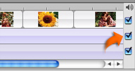

Turning audio on or off in each track
You can play one or both audio tracks at a time to preview your audio effects, or turn off the audio in the video track of your movie. For example, if you notice sound problems coming from your video track, you might mute the video track to eliminate them.

To turn the audio in a track on or off:
Select or deselect the checkbox on the right side of the track.
 Was this page helpful? Send feedback.
Was this page helpful? Send feedback.